Chapter 14 R 차원 축소
이 장에서는 다음 내용을 다룬다.
- 데이터 분석에서 차원 축소의 개념
- 대표적인 차원 축소 방법인 주성분 분석을 R을 이용하여 수행하는 방법
14.1 차원 축소 (Dimension Reduction)
14.1.1 데이터의 차원
일반적으로 데이터는 다음의 5 명의 고객 데이터베이스처럼 행과 열로 구성된다. 행은 관측대상인 각각의 고객을, 열은 나이, 거래기간, 소득처럼 관측대상의 특징을 나타낸다.
| 나이 | 거래기간 | 소득 |
|---|---|---|
| 35 | 10 | 45 |
| 45 | 15 | 55 |
| 30 | 5 | 70 |
| 25 | 20 | 30 |
| 50 | 25 | 60 |
그리고 관측대상의 특징을 나타내는 각각의 열을 특성(features) 또는 변수(variables)라고 한다.16 우리는 데이터프레임의 열을 변수라고 부르도록 한다. 그러므로 앞의 고객 정보는 3 개의 변수로 구성된 데이터이다.
데이터에서 변수의 수를 차원이라고 한다. 앞의 고객 데이터베이스는 3 개의 변수가 있으므로 3차원 데이터라 할 수 있다. 변수의 수를 차원이라 부르는 이유는, 관측대상을 변수의 수만큼의 차원으로 이루어진 공간에서 한 점으로 표현할 수 있기 때문이다. 다음은 5 명의 고객을 3차원 공간의 한 점으로 표시한 예이다.

고차원 데이터
데이터 분석에서 변수의 수가 매우 큰 고차원 데이터를 다루어야 하는 경우가 자주 있다. 고차원 데이터가 생성되는 이유는 크게 두 가지이다.
원래 데이터에 측정치가 많은 경우: 종양의 유전자 분석 데이터에서 유전자의 수가 수만에서 수십만 개일 수 있으며, 생산 공정 데이터에서 측정센서의 수가 수백에서 수천 개일 수 있다.
원래 데이터에 변수가 많지 않더라도 새로운 변수가 추가되는 경우:
- 유도 변수(derived variables)의 추가: 데이터 분석을 할 때 이미 측정된 변수뿐 아니라, 분석의 정확성을 높이기 위하여 측정된 변수를 조합한 새로운 변수를 추가하는 경우가 많다. 예를 들어, 기업의 재무 데이터를 분석할 때, 기본적인 매출, 손익 등의 변수를 사용하여, 수익률, 유동성 비율, 전년 동월 매출 증가율 등의 변수들의 추가하여 기업의 수익성, 안전성, 성장성 등을 측정할 수 있다.
- 범주가 많은 범주형 변수의 변환: 데이터에는 수치형 변수뿐 아니라, 남, 녀의 성별처럼 범주를 나타내는 범주형 변수가 자주 포함된다. 일반적으로 회귀 모형 같은 데이터 분석 모형은 수학 함수로 모델링 되므로, 분석 모형에 입력되지 전에 범주형 변수는 수치형 변수로 변환되어야 한다. 범주형 변수는 범주의 수만큼의 지시변수 또는 가변수17로 변환된다. 그러므로 범주가 100 개인 하나의 범주형 변수가 있으면 100개의 새로운 변수가 추가된다.
다음은 한국프로야구(KBO) 2024 정규 시즌의 타자 기록에 대한 데이터이다.18
KBO 2024 타자 기록 내려받기앞의 CSV 파일을 내려받은 후, 데이터를 읽어보자.
Rows: 100 Columns: 38
── Column specification ────────────────────────────────────────────────────────
Delimiter: ","
chr (3): 선수명, 팀명, 포지션
dbl (35): 경기, 타석, 타수, 안타, 단타, 2루타, 3루타, 홈런, 득점, 타점, 볼넷, 고4, HBP, 삼진, 희플, 희타,...
ℹ Use `spec()` to retrieve the full column specification for this data.
ℹ Specify the column types or set `show_col_types = FALSE` to quiet this message.# A tibble: 100 × 38
선수명 팀명 포지션 경기 타석 타수 안타 단타 `2루타` `3루타` 홈런 득점
<chr> <chr> <chr> <dbl> <dbl> <dbl> <dbl> <dbl> <dbl> <dbl> <dbl> <dbl>
1 김도영 KIA 내야수 141 625 544 189 112 29 10 38 143
2 로하스 KT 외야수 144 670 572 188 116 39 1 32 108
3 구자욱 삼성 외야수 129 568 493 169 96 39 1 33 92
4 송성문 Hero 내야수 142 602 527 179 127 29 4 19 88
5 최정 SSG 내야수 129 550 468 136 70 27 2 37 93
6 에레… SSG 외야수 136 591 541 195 142 31 1 21 82
7 홍창기 LG 외야수 139 637 524 176 150 18 3 5 96
8 데이… NC 내야수 131 567 504 154 82 25 1 46 90
9 레이… 롯데 외야수 144 632 574 202 144 40 3 15 88
10 오스틴 LG 내야수 140 604 527 168 101 32 3 32 99
# ℹ 90 more rows
# ℹ 26 more variables: 타점 <dbl>, 볼넷 <dbl>, 고4 <dbl>, HBP <dbl>,
# 삼진 <dbl>, 희플 <dbl>, 희타 <dbl>, 병살 <dbl>, 도루 <dbl>, 도실 <dbl>,
# 타율 <dbl>, BABIP <dbl>, `볼넷%` <dbl>, `삼진%` <dbl>, `볼/삼` <dbl>,
# ISO <dbl>, `타수/홈런` <dbl>, OPS <dbl>, RC <dbl>, `RC/27` <dbl>,
# wRC <dbl>, SPD <dbl>, wSB <dbl>, wOBA <dbl>, wRAA <dbl>, WAR <dbl>이 데이터는 총 100 명의 타자에 대한 정보인데, 38 개의 열, 즉, 변수로 구성되어 있다.
선수명,팀명,포지션변수: 문자열 데이터로 타자의 소속팀과 포지션 정보를 나타낸다.경기부터도실까지의 19 개 변수: 경기의 기록원들에 의해 직접 기록되는 타자의 기본통계 정보를 나타낸다.타율부터WAR까지의 16 개 변수: 타자의 기본통계를 사용하여 타자에 대한 유용한 정보를 만들어 내는 유도변수이다.
타자 기록에 대한 통계의 의미를 자세히 알고자 하는 독자는 KBReport의 타자 스탯 등을 참조하기 바란다.
다음은 batters 데이터를 쉽게 살펴볼 수 있도록 표 형식으로 제공한 것이다.
웹 브라우저에서 이 책을 보는 독자는 네비게이션 메뉴를 이용하여 100 명의 타자에 대한 38 개 열을 차례로 살펴볼 수 있을 것이다. 타자는 WAR라는 기록의 내림차순으로 정렬되어 있다.
한 가지 주의 사항으로, 열 이름을 보면 R의 변수 이름에 사용할 수 없는 %나 / 등의 특수문자가 사용된 것을 볼 수 있다.
이러한 열을 R에서 사용하려면 열 이름을 다음처럼 `으로 감싸주어야 한다.
[1] 17.887[1] 56.91917우리는 이 장에서 batters 데이터를 사용하여 고차원 데이터를 차원축소하는 방법을 살펴볼 것이다.
고차원 데이터의 문제점
데이터 분석에서 고차원 데이터를 다룰 때는 다음과 같은 어려움이 있다.
- 시각적인 탐색이 어렵다.
- 데이터를 탐색하는 가장 중요한 방법은 그래프 등을 이용하여 시각화하는 것이다. 변수들이 너무 많으면 변수들의 분포나 변수들의 관계를 모두 시각적으로 파악하기 어렵다.
- 아울러 관측대상의 특징을 시각적으로나 통계적인 방법으로 비교하기 어렵다.
batters데이터에 있는 100 명의 타자의 특징을 비교하고자 할 때 35 개나 되는 통계치가 있기 때문에 어떤 변수를 기준으로 유사점과 차이점을 비교해야 하는지 어렵다.
- 변수들이 서로 중복된 정보를 가지거나 상관성이 높아질 가능성이 커진다.
batters데이터에서안타열은단타,2루타,3루타,홈런의 합이기 때문에 이 5 개의 변수는 서로 독립적이지 않다. 이렇게 서로 독립적이지 않은 열들이 있으면 선형 회귀 등의 데이터 분석에서 문제가 발생한다.batters는 기본 통계에서 유도된 다양한 유도 변수들이 있다보니, 관점이 다른 유도 변수들과 기본 통계치 사이에 높은 중복성이 발생할 수 있다. 데이터가 충분하지 않은 경우에 이렇게 중복된 변수로 예측 모형 등을 만들면 모형의 안전성이 저하된다.- 유사한 변수들의 효과가 중첩되어 나타나 특정 변수의 효과가 무엇인지 인지하기 어려워진다.
- 다음은
batters의 변수들 간의 Pearson 상관성을 시각화한 그림이다. 변수들은 상관계수의 유사성으로 계층적 군집화되어 나열되어 있다. 상관성은 [-1, 1] 사이의 값을 가지는데, 1에 가깝거나 -1에 가까우면 양과 음의 상관성이 매우 크다는 것을 의미한다. 그래프에서 보듯이 상관성이 큰 변수들이 꽤 있음을 확인할 수 있다.
library(corrplot)
select(batters, -(1:3)) %>% # 수치형 열만 선택
cor(use="pairwise.complete.obs") %>% # 상관계수 행렬 계산
corrplot(order="hclust") # 상관계수 행렬 시각화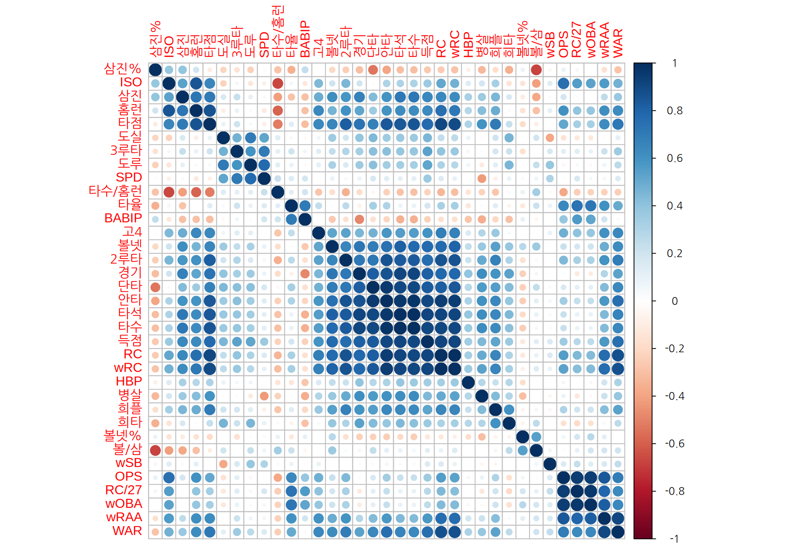
- 변수가 많아지면 관심있는 이슈와 상관없는 변수들이 포함될 가능성이 커진다.
- 불필요한 변수가 많아지면 데이터에 있는 우연적 패턴을 모형이 과적합되는 현상이 발생하여 모형의 예측력이 낮아진다. 예를 들어, 어떤 종양에 대한 유전자 분석을 한다고 가정해 보자. 수많은 유전자 중에서 종양의 발생과 관련된 유전자는 한정된 수일 것이고, 대부분의 유전자는 종양 발생과 관련성이 없을 것이다. 그러나 관측치 수가 충분하지 않을 때, 모든 유전자를 변수에 포함하여 종양 발생을 예측하는 모형을 만들면 관련 없는 유전자 중 일부의 패턴과 종양 발생 패턴이 우연히 일치하거나 유사할 확률이 높아지게 된다. 이런 현상이 발생하면 모형은 우연한 패턴을 실제적 패턴으로 오인하여 학습될 수 있다.
- 변수의 처리 비용이 증가한다.
- 데이터 분석을 할 때 계산량이 늘어나 처리 시간이 길어진다.
- 향후에 새로운 데이터를 수집할 때에도 모든 변수를 수집해야 하므로 수집 비용이 증가한다.
차원의 저주 (The cusrse of dimension)
차원의 저주란 데이터의 차원이 증가하면 변수 공간에 관측치가 기하급수적으로 희박해지는 현상을 말한다.
10,000 명의 고객에 대한 마케팅 데이터베이스가 있다고 하자. 고객이 마케팅 캠페인에 반응할지를 예측하는 반응예측 모형을 만드는데, 예측하려는 고객과 유사한 과거 사례로 예측을 하려고 한다. 즉, A라는 고객이 캠페인에 반응할지를 예측하려면, A와 유사한 고객을 10명을 선택하여 이 10 명이 과거에 수행한 유사한 마케팅 캠페인에 반응할지를 조사한다. 만약 A와 유사한 고객 중에 마케팅에 반응한 고객이 더 많다면 A 고객은 반응할 것으로 예측하고, 그렇지 않으면 반응하지 않는다고 예측한다. 이러한 예측 방법을 k-최근접이웃(k-nearest neighbors) 방법이라고 하는데, 이 방법의 핵심은 예측하고자 하는 사례와 유사한 과거의 사례를 찾는 것이다.
그런데 데이터의 차원이 커지면 유사한 사례들이 희박해지는 현상이 발생한다.
- 고객데이터베이스에 고객의 특징을 나타내는 변수가 ‘소득’ 한 개인 경우를 고려해 보자. 소득을 10 분위로 나누어 동일 분위의 과거 고객의 반응률을 측정하여 예측을 할 수 있다. 그러한 하나의 고객 그룹에 평균적으로 1,000 명의 관측치가 존재하므로 반응률의 신뢰성이 매우 높게 된다.
- 이번에는 고객을 나타내는 변수가 ’소득’과 ’나이’로 두 개인 경우를 고려해 보자. 소득과 나이를 각각 10 분위로 나누면, 소득과 나이가 동일한 분위인 한 그룹에는 평균 100 개의 관측치가 존재한다.
- 다시 변수가 ‘소득’, ‘나이’, ’거래기간’인 세 개인 경우를 고려해 보자. 각각 10 분위로 나누면, 한 그룹에 평균적으로 오직 10 개 관측치만 존재한다. 그러므로 10 명의 과거 고객의 우연적 특성이 예측에 반영될 가능성이 매우 커진다.
- 예측 변수가 p 개이고, 각 변수를 10 개의 분위로 나눠진다면, 한 그룹에 평균적으로 \(10,000 / 10^p\) 개의 관측치가 존재한다.
따라서 데이터에서 변수의 수가 증가하면, 근처의 사례 수가 기하급수적으로 감소하여 신뢰성있는 예측이 어려워지는 차원의 저주가 발생하게 된다.
14.1.2 차원 축소 방법
차원 축소란 데이터에 포함된 정보의 손실을 최소화 하면서 데이터에서 변수의 수를 줄이는 작업이다.
차원 축소를 하는 방법은 다음과 같다.
- 투영법(projection techniques): 고차원의 데이터를 더 낮은 차원의 초평면으로 투영한다. 대표적인 방법이 이 장에서 살펴볼 주성분 분석이다.
- 다양체법(manifold techniques): 고차원의 데이터를 저차원의 다양체로 투영한다. 다양체란 지역적으로 보면 평면에 가까우나 전체적으로 보면 비선형적인 모양을 의미한다. 대표적인 방법으로 LLE(locally linear embedding)이나 MDS(multidimensional scaling) 등이 있다.
14.2 주성분 분석 (Principal Components Analysis)
주성분 분석은 다수의 수치형 변수를 소수의 주성분으로 차원을 축소하는 방법으로, 데이터의 변동을 가장 잘 설명하면서 서로 독립인 주성분을 찾는다. 주성분 분석은 PCA(principal components analysis)라는 영어 약자로 자주 지칭된다.
14.2.1 주성분 분석에 대한 직관적 이해
다음은 한국인 인체지수조사 (사이즈코리아)에 게재된 8차 인체치수조사(2020-23)에서 1-2차년도 직접측정 데이터에서 남자의 신체 치수 데이터 중 100 개를 임의 추출한 것이다. 이 예에서는 키, 몸무게, 가슴둘레, 허리둘레만 살펴보지만 원 데이터에는 관측대상에 대한 150 여개의 신체 측정치를 가지고 있다. 이 데이터를 사용하여 주성분 분석이 무엇인지에 대한 직관적 이해를 도모해 보자.
다음은 100 명의 성인 남자의 키와 몸무게의 산점도이다.
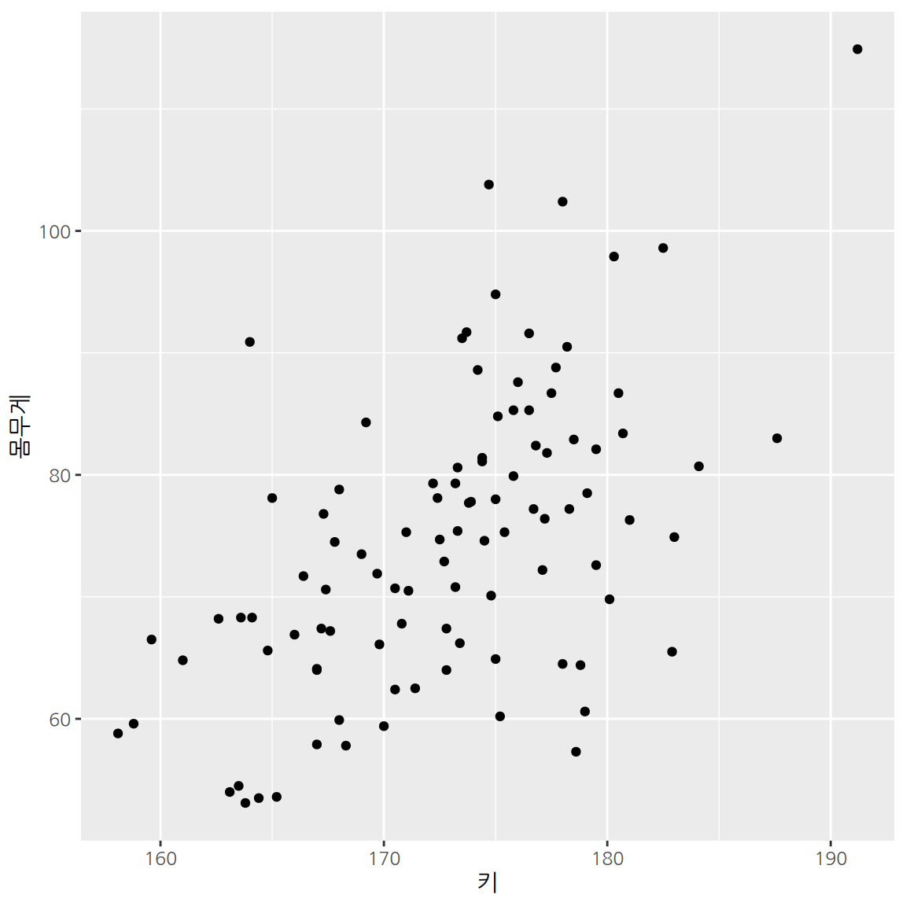
키와 몸무게의 두 측정항목이 있으므로 2차원 좌표공간에서 점으로 관측대상을 표현할 수 있다. 만약 관측대상의 이러한 2차원적 특징을 하나의 특징-즉, 변수로 요약한다면 어떻게 요약하면 좋을까? 앞의 산점도를 살펴보면, 같은 키인 사람도 몸무게의 차이가 꽤 나긴 하지만 전반적으로 키가 클수록 몸무게가 커지는 양의 상관성이 있다. 그러므로 우리는 키와 몸무게를 아우르는 ’체격’이라는 종합적 개념을 상정할 수 있을 것이다. 체격이 큰 사람은 키와 몸무게가 크고, 체격이 왜소한 사람은 키와 몸무게가 작다고 할 수 있다.
그렇다면 키와 몸무게처럼 측정될 수 있는 일차적 요인이 아닌, 체격 같은 이차적, 잠재적 요인을 수치화하려면 어떻게 해야 할까? 우리는 키와 몸무게라는 정보를 체격이라는 하나의 요인으로 종합했을 때, 원래의 2차원 정보가 최대한 손실되지 않는 것을 원할 것이다. 주성분 분석은 고차원 데이터-이 예에서는 2차원의 키와 몸무게-를 저차원의 주성분-이 예에서는 1차원의 체격-으로 요약할 때 기존의 데이터의 정보의 손실이 가장 작아지는 주성분을 찾는다.
다음은 키와 몸무게 데이터의 변동을 가장 잘 설명하는 축으로 주성분을 설정한 예이다. 각각의 점은 주성분 축에 직교투영(orthogonal projection) 되고, 해당 관측치는 주성분 축의 한 점으로 요약된다. 관측대상을 원래의 2차원으로 설명하는 것과 1차원인 주성분만으로 설명하는 것은 정보의 차이가 있으므로 오차가 발생한다. 오차는 원래의 관측점과 주성분에 투영된 점 사이에는 거리로 평가되며, 주성분 분석은 오차의 제곱의 합이 최소화되는 주성분 축을 찾는다.
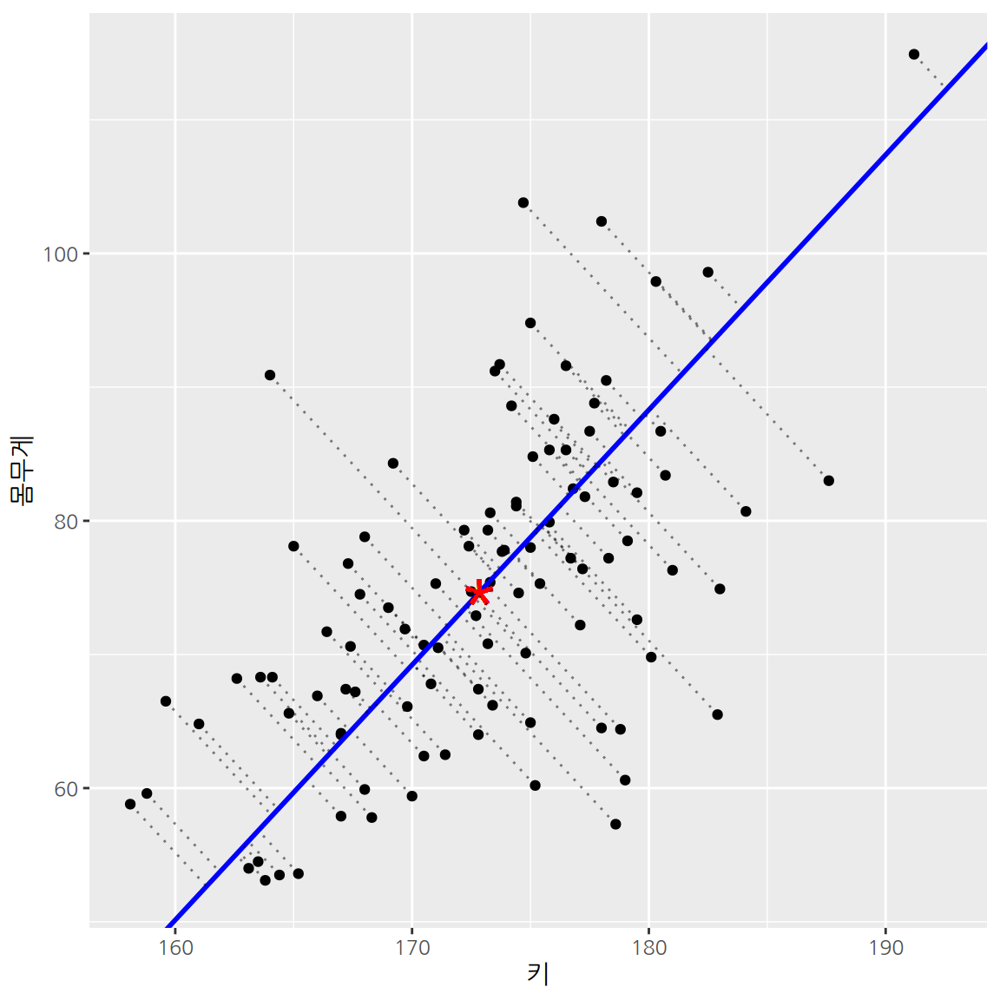
다음은 주성분을 다른 방향의 축으로 설정했을 때의 오차를 보여준다. 주성분의 방향이 데이터의 변동과는 무관한 방향으로 설정되었기 때문에 주성분 축으로 직교투영된 후의 오차가 커지는 것을 볼 수 있다. 따라서 주성분 분석이란 원래의 데이터가 저차원의 주성분 공간으로 직교투영되었을 때 오차가가 최소화되는 주성분 방향을 찾는 것이라고 할 수 있다.
마찬가지로 관측대상의 몸무게와 허리둘레라는 2차원 데이터를 하나의 주성분으로 요약하는 것도 생각해 볼 수 있을 것이다. 몸무게와 허리둘레를 공통적으로 설명하는 비만이라는 잠재요인으로 주성분을 설명할 수도 있을 것이다.
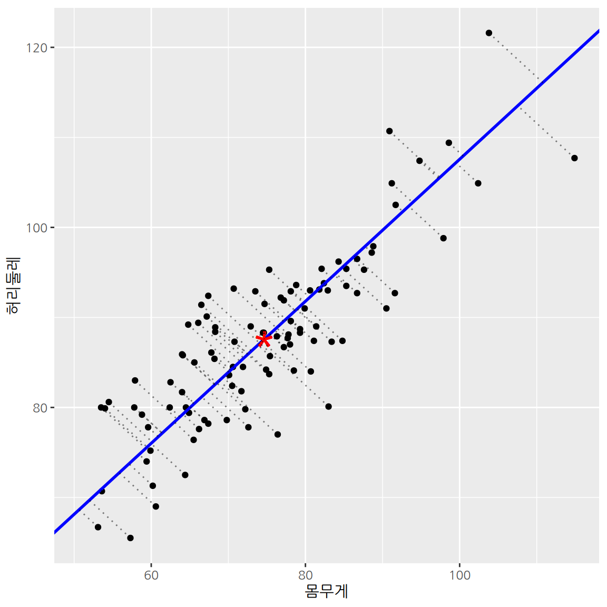
14.2.2 3차원 이상의 데이터로의 주성분 분석의 확장
주성분 분석은 지금까지 본 2차원 데이터를 주성분으로 요약하는 것뿐 아니라, 3차원 이상의 데이터에도 적용할 수 있다. 다음은 100 명의 남자의 키, 몸무게, 허리둘레 데이터를 3차원 공간에 시각화한 것이다.
웹 브라우저에서 이 책을 보는 독자는 여러 각도로 축을 변화시키며 그래프를 살펴보자. 키와 몸무게의 데이터와 마찬가지로, 키, 몸무게, 허리둘레도 공간 상에 무작위적으로 분포하는 것이 아니라 상관관계를 가지고 있기 때문에 특정한 평면 상에 데이터가 몰려서 분포해 있음을 확인할 수 있다. 따라서 이 데이터의 변동을 가장 잘 설명하는 2차원의 평면을 찾으면 정보의 손실을 최소화하면서 3차원 데이터를 2차원 데이터로 요약할 수 있을 것이다. 다음은 두 개의 주성분으로 요약한 결과이다.
다음은 100 명 남자의 몸무게, 허리둘레, 가슴둘레 데이터를 시각화한 결과이다. 이 세 변수는 상관성이 매우 높아 하나의 직선으로도 요약해도 정보의 손실이 적을 것으로 보인다. 이 경우에는 3차원 데이터를 하나의 주성분-즉, 1차원 데이터로도 요약하는 것을 시도해 볼 수 있을 것이다.
다음은 하나의 주성분으로 3차원 데이터를 요약한 결과이다.
3차원보다 차원이 더 큰 데이터도 요약할 수 있다.
- 150 개의 측정치로 이루어진 신체 측정 데이터를 중요한 5 개의 주성분으로 요약하여, 옷의 사이즈를 타나내는 기준으로 사용할 수도 있다.
- 35 개의 통계치로 이루어진 타자의 기록을 주요한 2 개의 주성분으로 요약하여 이차원 좌표에 타자를 시각화할 수도 있다.
- 20~30 개의 문항으로 이루어진 고객만족도에 대한 점수를 유형성, 신뢰성, 대응성, 확신성, 공감성 등의 주성분으로 변환하여 고객만족도의 개선 방안을 탐색할 수도 있다.
지금까지는 수치형 변수로만 이루어진 데이터를 차원축소하는 것을 보여주었다. 범주형 변수로 이루어진 데이터를 차원축소하는 대응분석(correspondance analysis)이라는 방법도 있다. 여기서는 수치형 변수로만 이루어진 데이터를 PCA를 이용하여 차원축소하는 방법만을 다룬다.
14.2.3 주성분 분석의 간략한 이론
수치형 변수 \(X_1, X_2, \dots, X_p\)로 이루어진 \(p\)-차원의 데이터를 고려해 보자. 주성분 분석은 \(Z_1, Z_2, \dots, Z_q\) 개의 \(q\) 개의 주성분을 찾는다. \(q \le p\)로, 일반적으로 주성분의 차원 \(q\)는 \(p\)보다 매우 작다.
주성분 \(Z_k\)는 원 변수 \(X_1, X_2, \dots, X_p\)의 다음과 같은 선형변환이다. \[ Z_k = a_{1k} (X_1 - \bar{X}_1) + a_{2k} (X_2 - \bar{X}_2) + \cdots + a_{pk} (X_p - \bar{X}_p) \quad k=1,2,\dots,q. \]
- \(\bar{X}_j\)는 원 변수 \(X_j\)의 평균이다.
- \(a_{jk}\)는 \(k\)-번째 주성분 \(Z_k\)의 방향과 원 변수의 축 \(X_j\)의 일치 정도를 나타내는 계수로서, 주성분 분석은 주성분이 데이터의 변동을 최대한 설명하도록 주성분 방향, 즉, 계수를 계산해 낸다. 한 주성분의 계수의 제곱의 합은 1이다. 즉, \[ a_{1k}^2 + a_{2k}^2+ \cdots + a_{pk}^2 = 1, \quad k=1, 2, \dots, q. \]
주성분 \(Z_1, Z_2, \dots, Z_q\)가 원래 데이터의 변동성을 가장 잘 설명하면서, 주성분이 서로 독립이도록-즉, 정보가 중복되지 않도록-다음과 같은 절차로 주성분을 도출한다.
- 첫 번째 주성분 \(Z_1\)은 데이터의 변동성을 최대로 하는 방향으로 설정된다.
- 두 번째 주성분 \(Z_2\)는 \(Z_1\)과 직교하면서, \(Z_1\)이 설명하지 못한 데이터의 나머지 변동성을 최대로 설명하는 방향으로 설정된다.
- \(k\)-번째 주성분은 이전의 주성분 \(Z_1, Z_2, \dots, Z_{k-1}\)과 직교하면서, 데이터의 나머지 변동성을 최대로 설명하는 방향으로 설정된다. 이러한 과정을 \(q\) 개의 주성분이 모두 찾아질 때까지 수행한다.
주성분 \(Z_k\)의 계수 \(a_{jk}\)를 주성분 \(Z_k\)의 변수 \(X_j\)에 대한 적재량 또는 로딩(loading)이라한다.
- 로딩 \(a_{jk}\)는 원래 변수 \(X_j\)가 한 단위 변할 때 주성분 \(Z_k\)의 변화량을 의미한다.
- \(X_j\)에 대한 로딩 \(a_{jk}\)의 절대값이 크다면, 주성분 \(Z_k\)와 \(X_j\) 상관성이 크다는 것을 의미한다. 다시 말하면, 주성분 \(Z_k\)의 방향이 \(X_j\)의 축 방향에 가깝다는 것을 의미한다.
- 주성분의 의미를 해석하려면 로딩 값을 확인하여야 한다. 어떤 원래 변수와 연관된 성분인지를 파악하여 주성분의 의미를 해석한다.
14.2.4 R로 주성분 분석하기
다음은 batters 데이터에서 타자의 삼진과 타점 수를 산점도로 시각화한 것이다.
삼진과 타점의 양의 상관성을 확인할 수 있다.

삼진과 타점으로만 되어 있는 타자의 데이터를 한 점으로 요약한다면 어떤 점으로 요약하여야 할까? 삼진과 타점의 평균점으로 요약하는 것이 좋은 방법일 것이다. 왜냐하면 평균점으로 요약하면 요약한 점과 데이터의 거리(오차)의 제곱의 합이 최소가 되기 때문이다. 다음은 타자의 삼진과 타점의 평균점을 계산한 결과이다.
# A tibble: 1 × 2
삼진 타점
<dbl> <dbl>
1 71.1 57.1다음은 삼진과 타점 데이터와 함께 평균점을 시각화한 것이다.
ggplot(batters, aes(삼진, 타점)) +
geom_point() +
geom_segment(aes(xend=mean_point$삼진, yend=mean_point$타점),
alpha=0.1, linetype=2) +
geom_point(data=mean_point,
size=10, shape="*", color="red") 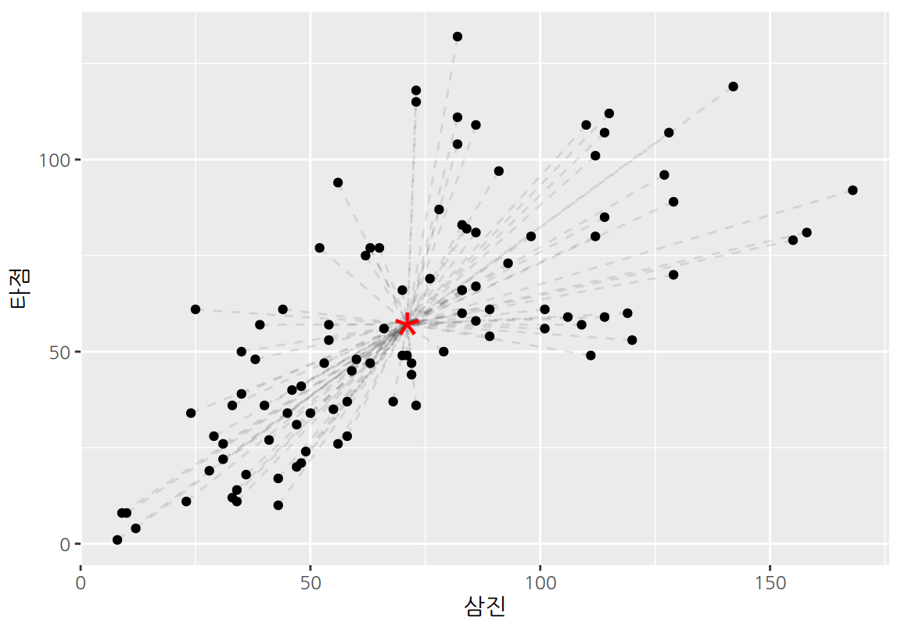
데이터를 평균점으로 요약하게 되면 정보의 손실이 발생한다. 파선은 실제 데이터와 평균점의 거리를 보여준다. 실제 데이터와 평균점의 거리의 평균은 분산으로 측정될 수 있다.
# A tibble: 1 × 2
삼진 타점
<dbl> <dbl>
1 1224. 949.[1] 2173.298결과에서 보듯이 평균점으로 데이터를 요약하는 것은 큰 분산을 보인다. 데이터를 하나의 주성분으로 요약하면 분산이 얼만큼 감소하는지 살펴보자.
R에서 주성분 분석은 R의 기본 패키지인 stat 패키지의 prcomp() 함수를 사용한다.
다음처럼 차원을 축소할 원 데이터를 함수의 인수로 주면 주성분 분석을 한다.
주성분 분석의 결과는 여러 요소로 구성되어 있으므로 변수에 저장하자.
Standard deviations (1, .., p=2):
[1] 43.12096 17.71670
Rotation (n x k) = (2 x 2):
PC1 PC2
삼진 -0.7675167 0.6410290
타점 -0.6410290 -0.7675167주성분 분석 결과를 출력하면 다음 두 가지 정보를 제공한다.
- standard deviations: 주성분의 표준편차를 보여준다. 주성분의 표준편차는 주성분이 데이터의 변동성을 얼만큼 설명하는지를 보여준다. 이 예에서는 첫 번재 주성분이 두 번째 주성분보다 훨씬 더 많은 데이터의 변동을 설명하는 것을 확인할 수 있다.
- rotation: 주성분의 로딩을 보여준다. 열의 PC1, PC2는 첫 번째 주성분과 두 번째 주성분을 의미하며, 행은 원래 변수를 보여준다. 따라서 PC1 열의 값이 첫 번째 주성분의 로딩 값이다. 이 예에서는 첫 번째 주성분은 삼진의 로딩의 절대값이 타점보다 더 크므로 삼진의 좌표축에 더 가깝게 주성분의 방향이 설정되었다.
주성분이 데이터의 변동을 어느 정도나 설명하고 있는지는 주로 분산을 사용하여 계산한다.
summary() 함수로 주성분 결과를 출력하면 각 주성분이 설명하는 데이터 분산의 비중을 출력한다.
Importance of components:
PC1 PC2
Standard deviation 43.1210 17.7167
Proportion of Variance 0.8556 0.1444
Cumulative Proportion 0.8556 1.0000- Standard deviation은 주성분 분석의 결과를 출력했을 때와 같은 내용이다.
- Proportion of Variance는 각각의 주성분이 전체 데이터의 변동을 나타내는 분산을 설명하는 비율을 나타낸다. 이 예에서는 첫 번째 주성분(PC1)이 전체 데이터 변동의 85.6%를 설명하는 것을 볼 수 있다.
- Cumulative Proportion은 첫 번째부터 지금의 주성분까지 모두 합하여 전체 데이터 변동을 설명하는 누적 비율을 나타낸다. 이 에에서 보듯이 2차원 데이터는 두 개의 주성분을 사용하면 원래의 데이터와 마찬가지의 2차원 데이터가 되므로 전체 데이터의 100%를 설명한다. 이 수치는 데이터의 차원이 클 때 데이터의 변동을 충분히 설명하도록 주성분의 수를 결정할 때 유용하게 사용된다.
주성분 분석 결과는 리스트라는 형식의 데이터이다.
리스트는 여러 요소로 구성되어 있다.
리스트의 요소는 데이터프레임의 열을 지정하듯이 $ 연산자를 사용하여 지정할 수 있다.
PC1 PC2
삼진 -0.7675167 0.6410290
타점 -0.6410290 -0.7675167 삼진 타점
71.07 57.14 PC1 PC2
[1,] -63.12319 -14.84816
[2,] -68.88386 -13.94556
[3,] -38.57124 -43.17133
[4,] -38.42758 -28.95938
[5,] -64.91120 -10.74901
[6,] -40.49433 -45.47388다음은 주성분 결과를 사용하여 원래 데이터와 평균점, 그리고 첫 번째 주성분을 시각화한 것이다.
\[ \begin{split} Z_1 &= a_{11} (X_{삼진} - \bar{X}_{삼진}) + a_{21} (X_{타점} - \bar{X}_{타점})\\ &= (-0.641) (X_{삼진} - 71.07) + (-0.768) (X_{타점} - 57.14) \end{split} \]
ggplot(batters, aes(삼진, 타점)) +
geom_point() +
geom_abline(slope = result$rotation[2,1] / result$rotation[1,1],
intercept = result$center[2] - result$center[1] * result$rotation[2,1] / result$rotation[1,1] ,
color ="blue", linewidth=1) +
geom_point(x = result$center[1], y = result$center[2],
color="red", size=10, shape="*") +
geom_vline(xintercept = result$center[1], linetype=2) +
geom_hline(yintercept = result$center[2], linetype=2)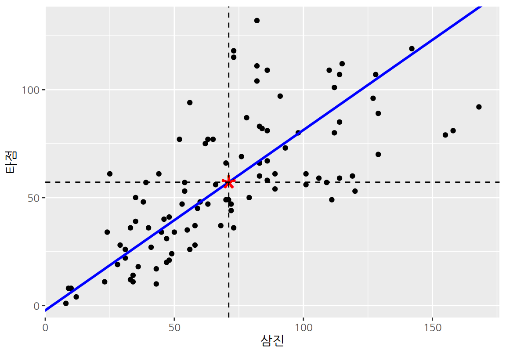
첫 번째 주성분 \(Z_1\)의 분산을 구해보자.
[1] 1859.417우리가 데이터를 첫 번째 주성분으로 표현하면 전체 데이터의 변동 중에 다음의 비율을 설명하게 된다.
[1] 0.8555737이 수치는 summary(result)의 Proportion of Variance의 값과 같다.
만약 우리가 첫 번째 주성분을 타점의 축과 동일하게 설정하였다면 타점의 분산만큼의 설명력을 가질 것이다. 분산이 더 큰 삼진과 동일하게 첫 번재 주성분을 설정하였다면 삼진의 분산만큼을 설명할 수 있다.
이 두 방향보다는 PCA가 찾은 주성분 방향의 분산이 더 크다는 것을 확인할 수 있다.
왜냐하면 첫 번째 주성분이 삼진과 타점의 변동성을 종합적으로 아울르면 데이터의 변동성을 설명하기 때문이다.
두 번째 주성분 \(Z_2\)는 평균점을 관통하며 \(Z_1\)과 직교하는 성분으로서, \(Z_1\)이 설명하지 못하는 나머지 데이터의 변동성을 가장 잘 설명하는 방향으로 설정된다. 우리는 삼진과 타점이라는 2차원 데이터에 대하여 주성분 분석을 하였으므로, 두 개의 주성분을 사용하면 원래의 데이터와 차원이 같아져서 원래 데이터의 변동성의 100%를 설명하게 된다.
다음은 주성분 결과를 사용하여 원래 데이터, 평균점, 첫 번째 주성분과 함께, 두 번째 주성분을 시각화한 것이다.
\[ \begin{split} Z_2 &= a_{12} (X_{삼진} - \bar{X}_{삼진}) + a_{22} (X_{타점} - \bar{X}_{타점}) \\ &= (-0.768) (X_{삼진} - 71.07) + (0.641) (X_{타점} - 57.14) \end{split} \]
ggplot(batters, aes(삼진, 타점)) +
geom_point() +
geom_abline(slope = result$rotation[2,1] / result$rotation[1,1],
intercept = result$center[2] - result$center[1] * result$rotation[2,1] / result$rotation[1,1] ,
color ="blue", linewidth=1) +
geom_abline(slope = result$rotation[2,2] / result$rotation[1,2],
intercept = result$center[2] - result$center[1] * result$rotation[2,2] / result$rotation[1,2] ,
color ="orange", linewidth=1) +
geom_point(x = result$center[1], y = result$center[2],
color="red", size=10, shape="*") +
geom_vline(xintercept = result$center[1], linetype=2) +
geom_hline(yintercept = result$center[2], linetype=2)두 번째 주성분 \(Z_1\)의 분산을 구해보자.
[1] 313.8814우리가 데이터를 첫 번째와 두 번째 주성분으로 모두 사용하여 표현하면 전체 데이터의 변동을 모두 설명하게 된다.
[1] 1이번에는 batters에서 기본 통계치를 사용하여 주성분 분석을 수행해 보자.
Importance of components:
PC1 PC2 PC3 PC4 PC5 PC6
Standard deviation 227.6116 28.88217 18.90857 14.39375 12.9006 11.28303
Proportion of Variance 0.9646 0.01553 0.00666 0.00386 0.0031 0.00237
Cumulative Proportion 0.9646 0.98010 0.98676 0.99061 0.9937 0.99608
PC7 PC8 PC9 PC10 PC11 PC12 PC13
Standard deviation 9.13151 5.99410 5.6753 5.04602 3.2435 2.84558 2.39047
Proportion of Variance 0.00155 0.00067 0.0006 0.00047 0.0002 0.00015 0.00011
Cumulative Proportion 0.99764 0.99830 0.9989 0.99938 0.9996 0.99972 0.99983
PC14 PC15 PC16 PC17 PC18 PC19
Standard deviation 1.91996 1.52211 1.24551 1.22170 0.1335 4.264e-15
Proportion of Variance 0.00007 0.00004 0.00003 0.00003 0.0000 0.000e+00
Cumulative Proportion 0.99990 0.99994 0.99997 1.00000 1.0000 1.000e+00plot() 함수를 사용하면 PCA의 주성분이 데이터의 변동을 설명하는 비중을 그래프로 시각화해 준다.
summary() 결과를 보면 처음 세 개의 주성분(PC1, PC2, PC3)이 데이터 변동의 98.68%를 설명하고 있다.
이 세 주성분의 로딩을 확인해 보자.
로딩은 주성부 분석 결과의 rotation이라는 요소에 행렬 형태로 저장되어 있다.
데이터프레임으로 변환하는 것이 시각화 등에서 편리하므로 변환을 수행하자.
행렬의 행 이름으로 원래의 변수가 표현되어 있는데, rownames_to_column() 함수로 데이터프레임의 열로 변환을 한다.
variable PC1 PC2 PC3
1 경기 -0.125983774 -0.013544269 -0.33194698
2 타석 -0.704644447 0.003368865 -0.19191550
3 타수 -0.623752796 0.032913208 0.12185395
4 안타 -0.194600279 0.236792796 0.31571466
5 단타 -0.129040730 0.415025349 -0.02651686
6 2루타 -0.034525170 -0.010192594 0.12910632
7 3루타 -0.003342892 0.010972214 -0.01774042
8 홈런 -0.027691486 -0.179012173 0.23086562
9 득점 -0.107494823 0.029021018 -0.04003317
10 타점 -0.115939578 -0.250816175 0.68806952
11 볼넷 -0.065314415 -0.042563889 -0.21406433
12 고4 -0.004787537 -0.010953884 0.02603029
13 HBP -0.008193194 -0.016966541 -0.03257435
14 삼진 -0.110173671 -0.809192507 -0.21746615
15 희플 -0.008178617 -0.005321719 0.03185580
16 희타 -0.007265888 0.029155389 -0.06875657
17 병살 -0.010816449 0.006844707 0.04062143
18 도루 -0.017027679 0.124889703 -0.28989259
19 도실 -0.005289567 0.029150508 -0.07838461첫 번째 주성분에서 로딩의 절대값이 가장 큰 변수 5 개를 확인해 보자.
abs() 함수는 수치 벡터를 절대값으로 변환한다.
variable PC1 PC2 PC3
1 타석 -0.7046444 0.003368865 -0.19191550
2 타수 -0.6237528 0.032913208 0.12185395
3 안타 -0.1946003 0.236792796 0.31571466
4 단타 -0.1290407 0.415025349 -0.02651686
5 경기 -0.1259838 -0.013544269 -0.33194698마찬가지로 두 번째, 세 번재 주성분에 대하여도 로딩의 절대값이 큰 순서대로 정렬해 볼 수 있다.
variable PC1 PC2 PC3
1 삼진 -0.11017367 -0.8091925 -0.21746615
2 단타 -0.12904073 0.4150253 -0.02651686
3 타점 -0.11593958 -0.2508162 0.68806952
4 안타 -0.19460028 0.2367928 0.31571466
5 홈런 -0.02769149 -0.1790122 0.23086562 variable PC1 PC2 PC3
1 타점 -0.11593958 -0.25081617 0.6880695
2 경기 -0.12598377 -0.01354427 -0.3319470
3 안타 -0.19460028 0.23679280 0.3157147
4 도루 -0.01702768 0.12488970 -0.2898926
5 홈런 -0.02769149 -0.17901217 0.2308656주성분의 로딩을 다음처럼 막대 그래프로 시각화할 수도 있다.
pivot_longer(loading, cols=PC1:PC3,
names_to="component", values_to="loading") %>%
ggplot() +
geom_col(aes(x=variable, y=loading)) +
coord_flip() +
facet_wrap(~component)- 첫 번째 주성분과 가장 상관성이 높은 변수는 타석, 타수, 안타 등이다.
- 두 번째 주성분과 가장 상관성이 높은 변수는 삼진, 단타, 타점 등이다.
- 세 번째 주성분과 가장 상관성이 높은 변수는 타점, 경기, 안타 등이다.
14.2.5 데이터 정규화 후 주성분 분석하기
다음은 basic_stat의 모든 변수의 표준편차를 구한 결과이다.
summarise(basic_stat, across(everything(), sd)) %>%
pivot_longer(everything(), names_to="variable", values_to="sd") %>%
arrange(desc(sd))# A tibble: 19 × 2
variable sd
<chr> <dbl>
1 타석 161.
2 타수 142.
3 안타 45.6
4 삼진 35.0
5 단타 32.3
6 경기 31.3
7 타점 30.8
8 득점 26.8
9 볼넷 18.6
10 도루 11.3
11 홈런 9.99
12 2루타 9.38
13 HBP 4.97
14 병살 4.01
15 희타 3.89
16 도실 3.25
17 희플 2.88
18 3루타 1.97
19 고4 1.93위의 결과에서 보듯이 변수들의 표준편차의 차이가 크며, 주성분은 표준편차가 큰 변수에 강한 영향을 받는 것을 볼 수 있다. 또한 변수의 표준편차는 변수의 측정 단위가 바뀌면 크게 변동하고, 변수의 표준편차는 다시 주성분 분석의 결과에 영향을 준다. 그러므로 변수의 스케일에 무관하게 주성분 분석 결과를 얻으려면 변수의 스케일이 일치하도록 조정할 필요가 있다.
변수의 스케일을 일치시키는 방법 중 하나가 정규화이다. 정규화는 변수의 평균을 0, 표준편차를 1로 일치시킨다. 정규화가 수행된 변수는 대부분의 값이 \(\pm 2, 3\) 사이의 값을 가진다. 정규화를 하는 방법은 변수 \(X_j\)를 변수의 평균 \(\bar{X}_j\)로 빼준 후, 변수의 표준편차 \(sd(X_j)\)로 나누는 것이다. \[ \frac{X_j - \bar{X}_j}{sd(X_j)} \]
데이터를 정규화한 후 주성분 분석을 하는 것은 매우 간단하다.
precomp() 함수의 scale.=TRUE 인수를 설정하면 된다.
정규화한 후에 주성분이 데이터의 변동성을 얼만큼 설명하고 있는지를 살펴보자.
Importance of components:
PC1 PC2 PC3 PC4 PC5 PC6 PC7
Standard deviation 3.2495 1.5816 1.13714 0.95805 0.8954 0.79789 0.72791
Proportion of Variance 0.5558 0.1316 0.06806 0.04831 0.0422 0.03351 0.02789
Cumulative Proportion 0.5558 0.6874 0.75548 0.80378 0.8460 0.87949 0.90737
PC8 PC9 PC10 PC11 PC12 PC13 PC14
Standard deviation 0.64978 0.57198 0.54130 0.46935 0.4249 0.36803 0.30069
Proportion of Variance 0.02222 0.01722 0.01542 0.01159 0.0095 0.00713 0.00476
Cumulative Proportion 0.92960 0.94681 0.96224 0.97383 0.9833 0.99046 0.99522
PC15 PC16 PC17 PC18 PC19
Standard deviation 0.21916 0.15362 0.13853 0.001388 2.28e-16
Proportion of Variance 0.00253 0.00124 0.00101 0.000000 0.00e+00
Cumulative Proportion 0.99775 0.99899 1.00000 1.000000 1.00e+00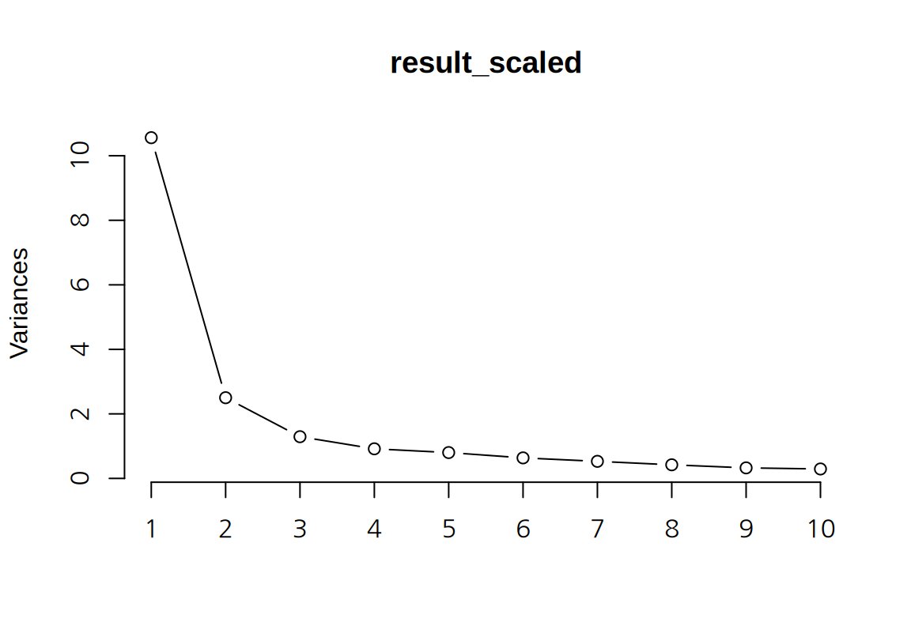
정규화한 후에는 데이터 변동의 90% 이상을 설명하려면 7 개의 주성분이 필요하다. 정규화 전에는 1 개의 주성분만 필요하였는데, 크게 증가하였다. 그 이유는, 정규화 전에는 분산이 큰 몇몇 변수의 영향력이 크기 때문에 주성분이 해당 변수를 중심으로 데이터를 설명하면 데이터의 분산을 대부분 설명할 수 있는데, 정규화하면 그럴 수 없기 때문이다.
다음은 처음 3 개의 주성분의 로딩을 보여준다.
loading_scaled <- data.frame(result_scaled$rotation[,1:3]) %>%
rownames_to_column(var="variable")
loading_scaled %>% slice_max(abs(PC1), n=5) variable PC1 PC2 PC3
1 타석 -0.3030404 -0.004139004 -0.022100118
2 타수 -0.3013726 0.005585644 -0.005310627
3 안타 -0.2967228 -0.006587956 0.015430763
4 득점 -0.2866023 -0.090381468 0.187380225
5 경기 -0.2800935 -0.045186016 -0.141002475 variable PC1 PC2 PC3
1 도루 -0.1134233 -0.5079514 0.18455243
2 도실 -0.1191901 -0.4837412 0.04390768
3 3루타 -0.1272447 -0.3518211 0.32741455
4 홈런 -0.2085227 0.3326075 0.22543196
5 희타 -0.1455764 -0.2850001 -0.52411397 variable PC1 PC2 PC3
1 희타 -0.1455764 -0.28500009 -0.5241140
2 병살 -0.1859317 0.19893070 -0.3731692
3 고4 -0.1912357 0.18442274 0.3377673
4 3루타 -0.1272447 -0.35182109 0.3274145
5 HBP -0.1193420 0.04119159 -0.3055655pivot_longer(loading_scaled, cols=PC1:PC3,
names_to="component", values_to="loading") %>%
ggplot() +
geom_col(aes(x=variable, y=loading)) +
coord_flip() +
facet_wrap(~component)- 첫 번째 주성분은 타자의 모든 기본 통계치와 음의 상관성을 가진다. 따라서 첫 번째 주성분의 크기가 크면 모든 통계치의 값이 전반적으로 낮은 타자이고, 주성분의 크기가 작으면 모든 통계치의 값이 전반적으로 높은 타자이다. 이러한 특성을 고려해 보건데, 첫 번째 주성분은 타자가 주전 선수인지 비주전 선수인지와 관련된 성분으로 보인다. 주전 선수는 이 주성분의 값이 낮을 것이고, 비주전 선수는 이 성분의 값이 높을 것이다.
- 두 번째 주성분은 홈런, 타점, 삼진, 병살, 고의사구, 2루타와 양의 상관성을, 희생타, 도실, 도루, 3루타와는 음의 상관성을 가진다. 이러한 특서을 보건데 발은 빠르지 않지만 힘이 있는 거포형 타자와 관련된 성분으로 보인다. 따라서 이 성분이 높으면 거포형 타자, 이 성분이 낮으면 발이 빠른 타자일 가능성이 있다.
- 세 번째 주성분은 홈런, 득점, 도루, 고의4구, 3루타 등과 양의 상관성을, 희생플라이, 희생타, 병살, HBP와는 음의 상관성을 보인다. 이 타자는 발도 빠르면서 홈런 등도 때려낼 수 있는 중거리형 타자로 보인다. 주로 팀의 테이블 세터로서 상위 타선에 배치될 만한 타자들이다.
14.2.6 주성분 분석의 시각화
biplot() 함수를 사용하면 주성분 분석의 결과를 시각화할 수 있다.
- 첫 번째 인수로 주성분 분석의 결과를 전달한다.
choice인수에 시각화할 두 개의 주성분을 지정한다. 디폴트 값을1:2로 처음 두 개의 주성분으로 시각화를 수행한다.scale인수는 시각화할 때 주성분의 표준편차의 크기를 어느 정도 고려하여 그릴지를 지정한다. 주성분 \(Z_k\)의 표준편차는 특이값 \(\lambda_k\)에 의해 결정되는데, 관측치를 시각화할 때 주성분을 \(\lambda_k^{1-scale}\) 스케일로 표현한다.scale=1이 디폴트 값으로 모든 주성분이 동일한 스케일로 그려진다. 0부터 1 사이로 지정되는데scale=1이면 주성분의 표준편차에 비례하는 스케일로 관측치가 표현된다.scale이 0에서 1로 증가할수록 주성부 사이의 스케일이 비슷해진다.scale인수는 변수의 로딩값을 시각화하는 스케일도 지정한다. 변수의 로딩값은 \(\lambda^{scale}\) 스케일로 표현되며,scale=0이면 주성분이 동일한 스케일로,scale=1이면 주성분이 표준편차에 비례하는 스케일로 시각화 된다.
다음은 처음 두 주성분을 동일한 스케일로 하여 관측치를 시각화한 것이다.
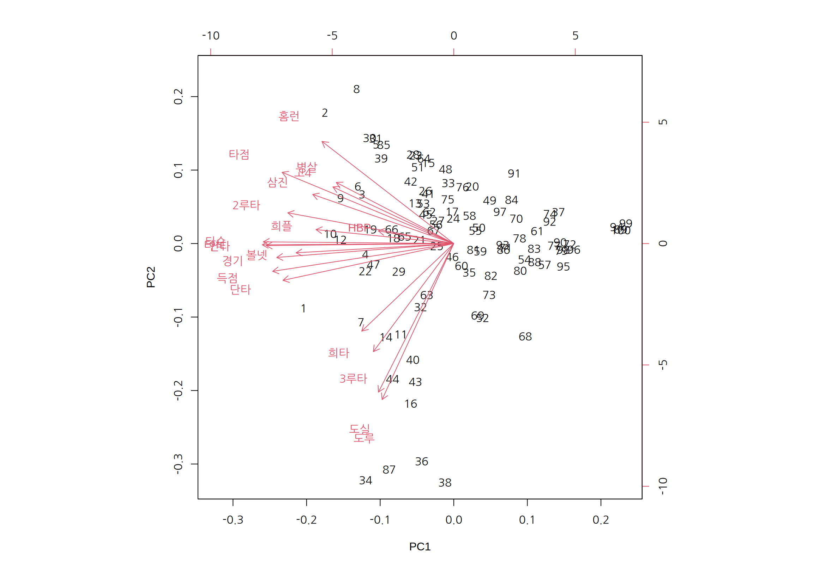
번호로 표시된 것은 관측대상인 타자들이고, 빨간 선분은 원래 변수를 주성분으로 표현한 벡터이다. 변수 벡터에서 보듯이 PC1이 줄어드는 방향이 모든 변수가 증가하는 방향임을 보여준다. PC2가 증가하는 방향으로는 홈런, 병살, 타점, 병살이 증가하는 방향이고, PC2가 감소하는 방향이 도루, 도실, 3루타, 희생타가 증가하는 방향임을 확인할 수 있다.
그런데 타자들이 번호로만 표시되고 이름으로 표시되지 않아서 그래프를 해석하는데 한계가 있다.
biplot()에서 관측대상이 이름으로 표시되게 하려면, prcomp()에 전달되는 데이터프레임의 행이름(row.names)이 설정되어 있어야 한다.
[1] "1" "2" "3" "4" "5" "6" "7" "8" "9" "10" "11" "12"
[13] "13" "14" "15" "16" "17" "18" "19" "20" "21" "22" "23" "24"
[25] "25" "26" "27" "28" "29" "30" "31" "32" "33" "34" "35" "36"
[37] "37" "38" "39" "40" "41" "42" "43" "44" "45" "46" "47" "48"
[49] "49" "50" "51" "52" "53" "54" "55" "56" "57" "58" "59" "60"
[61] "61" "62" "63" "64" "65" "66" "67" "68" "69" "70" "71" "72"
[73] "73" "74" "75" "76" "77" "78" "79" "80" "81" "82" "83" "84"
[85] "85" "86" "87" "88" "89" "90" "91" "92" "93" "94" "95" "96"
[97] "97" "98" "99" "100"Warning: Setting row names on a tibble is deprecated.다음으로 두 번째와 세 번째 주성분으로 타자들을 시각화해 보자.
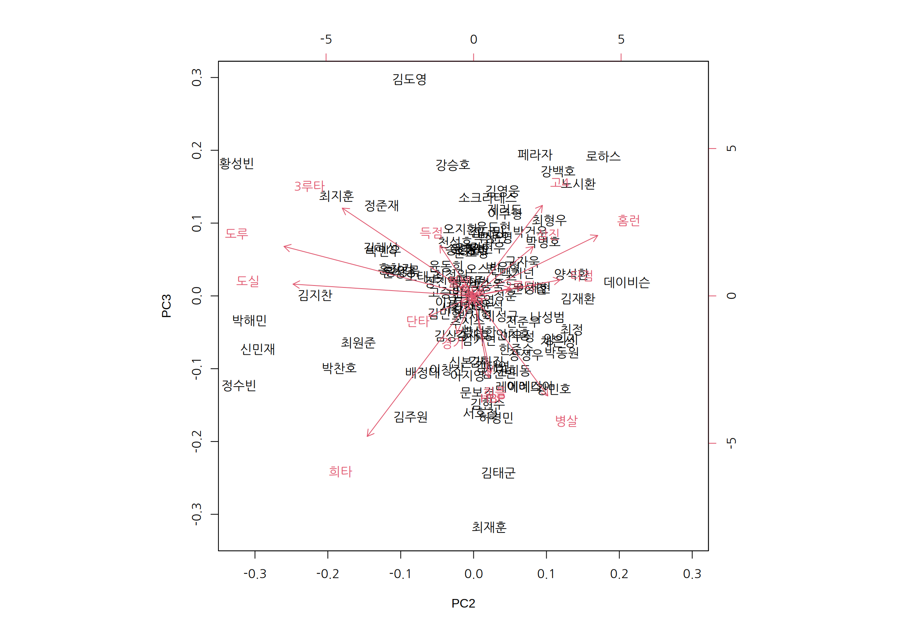
다음처럼 PCA 결과를 데이터프레임으로 변환한 후, ggplot2를 이용하여 직접 시각화를 수행할 수도 있다.
Z <- data.frame(result_scaled$x) %>% rownames_to_column(var="선수명")
ggplot(Z, aes(PC1, PC2)) +
geom_text(aes(label=선수명, color=batters$팀명)) +
labs(color="팀명") +
theme_bw()ggbiplot 등의 패키지를 사용하면 ggplot2 형식으로 여러 가지 형태의 biplot을 좀 더 쉽게 그릴 수 있다.
ggbiplot이 설치되어 있지 않다면 먼저 설치하자.
ggbiplot() 함수는 PCA 결과를 첫 번째 인수로 받아서 biplot을 ggplot2 형식으로 그려준다.
choices 인수와 scale 인수는 biplot() 함수와 동일하다.
varname.color는 변수 벡터의 색상을 지정한다.
labels 인수를 설정하면 관측대상이 점 대신 lables에 설정된 값으로 그래프에 표시된다.
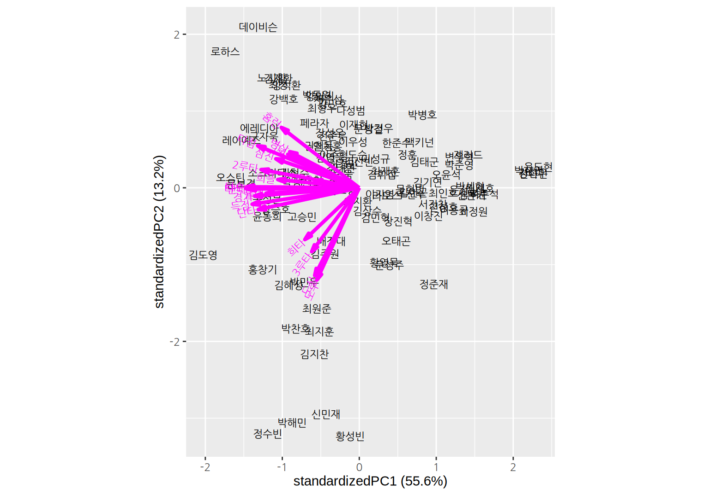
groups 인수를 설정하면 이 인수에 설정된 값에 따라 관측치가 다른 색상으로 표시된다.
다음은 선수의 소속팀에 따라 다른 색상으로 선수를 표현한다.
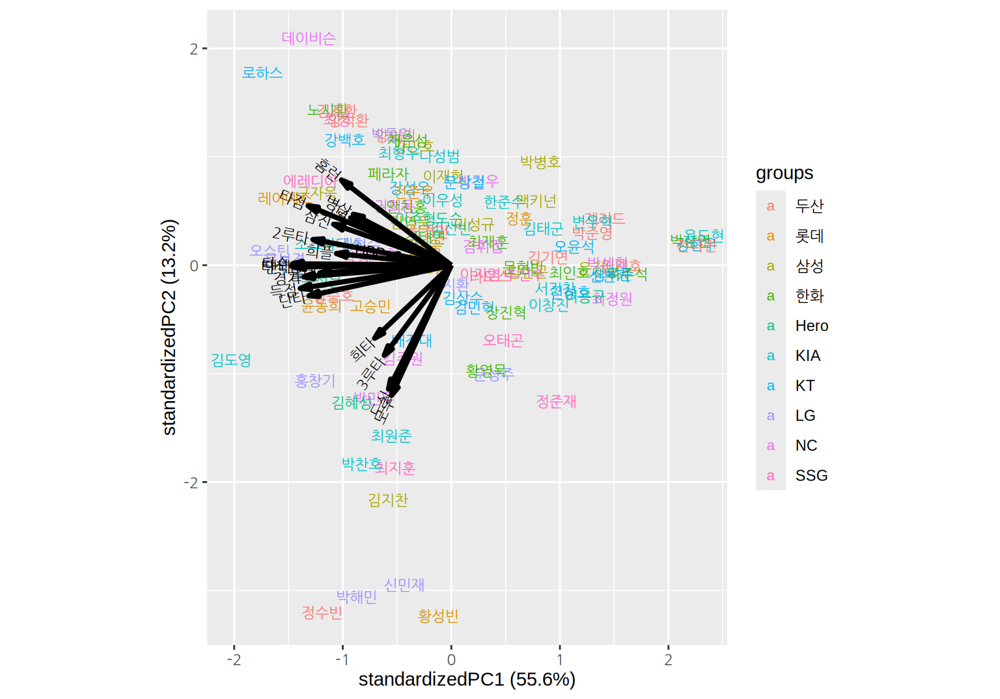
groups이 설정되어 있고 ellipse=TRUE이면 동일 그룹의 데이터의 분포를 타원으로 표시한다. ellipse.alpha는 타원의 채우기 색의 투명도를 조정하고, ellipse.linewidth는 타원의 선 굵기를 지정한다.
ggbiplot(result_scaled,
labels=batters$선수명,
groups=batters$팀명,
ellipse=T, ellipse.alpha=0.1, ellipse.linewidth=0.5) +
theme_classic()다음은 선수의 포지션으로 그룹화하여 색상을 달리 표현하고 분포를 나타내는 타원을 그린다.
데이터베이스에서는 필드(fields)라고도 한다.↩︎
특정 범주이면 1, 아니면 0의 값을 가지는 변수이다.↩︎
데이터 출처: 야구기록실 케이비리포트↩︎